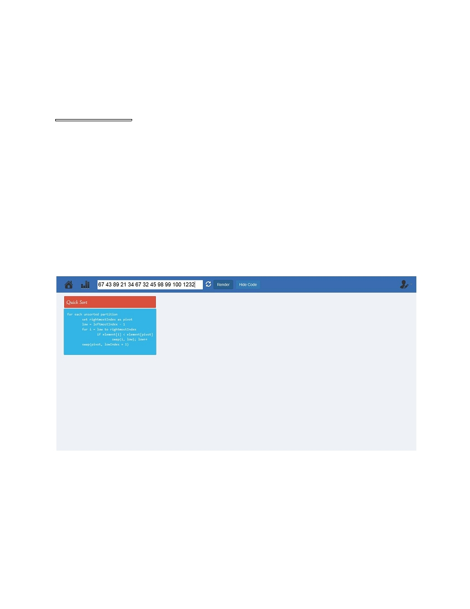
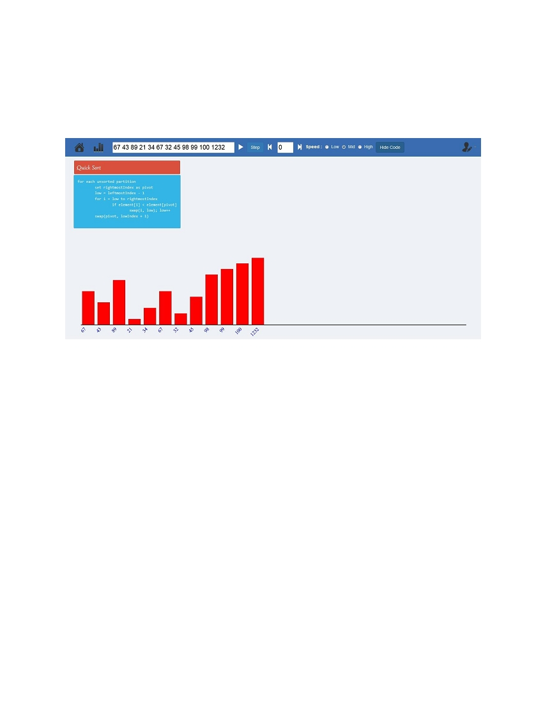
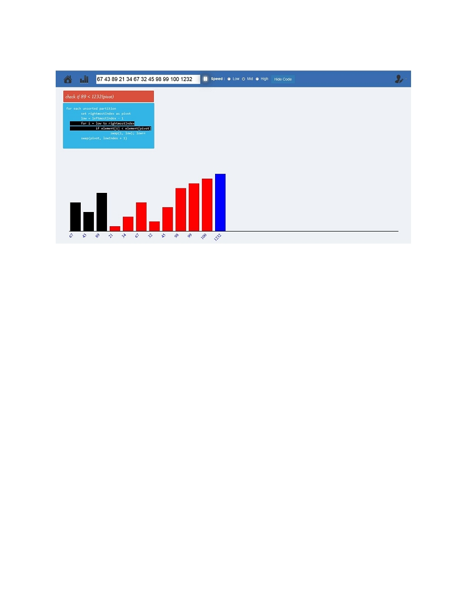
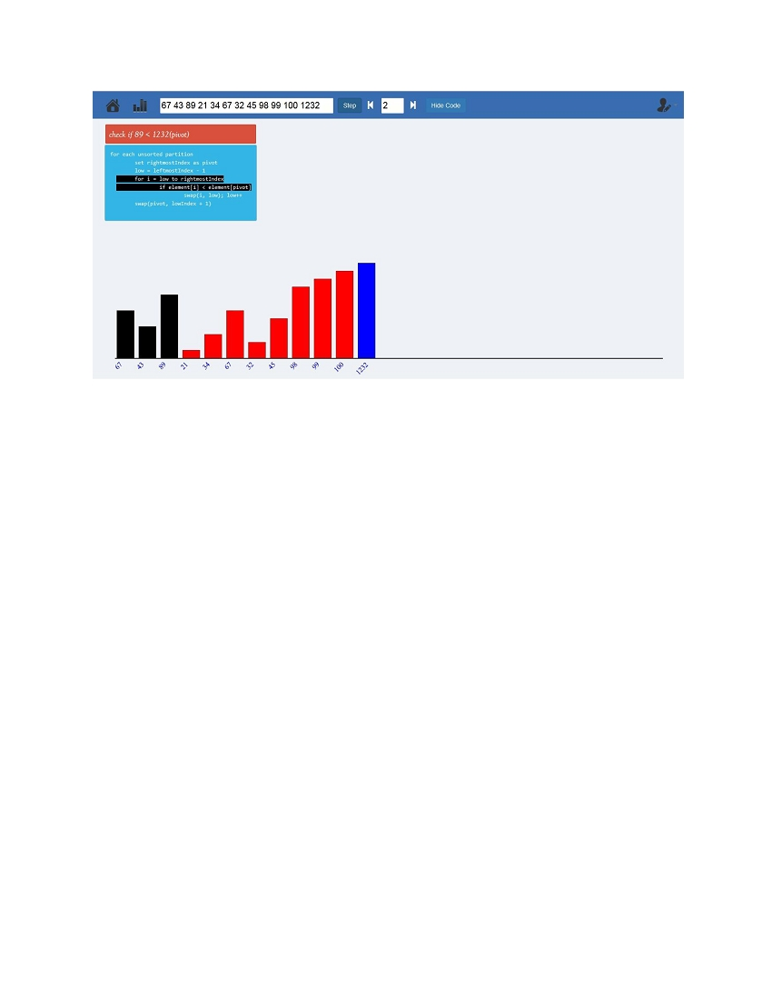

e-MAGINE Sorting Simulator
Tutorial
e-MAGINE software provides a platform to generate and view sorting
algorithms, namely Bubble Sort, Insertion Sort, Selection Sort, Shell
Sort and Quick Sort with interactive graphics.
How to Use :
Following is an example of Quick Sort Illustration. From the main
illustration page, select Quick Sort from the Sorting section.
Selecting Quick Sort will open the algorithm illustration page where the
user can generate and view the Quick Sort Algorithm .

Get Started :
1. Provide a valid space separated input of integers, which you wish to
sort in the area provided in the toolbar. The maximum limit of input is
25 integers.
2. Click the Render button to confirm input and form the sorting bars.
Click the Refresh button to enter a fresh input.
3. Clicking the Render button will generate the sorting bars and the
animation play tools will become visible.

4. Click the Hide Code button, if you want to hide the pseudo code from
the screen. Re-click the button the show the code back.
The Simulation can be performed in either of the two modes :
(a) Running Sort Mode :
Click the Play Button to start the sorting simulation. The Sorting
Speed can be selected from the radio buttons available in the
toolbar.

The play button toggles between play/pause so that the simulation
can be stopped anytime during the time sorting is going on. The
speed of sorting can be adjusted after pausing the simulation.
(b) Step Mode :
The Simulation can also be viewed in a step-wise manner using the
forward and backward button to change the steps or directly
jump on a step by specifying the step no. in the box provided and
hitting the step button . In this mode, automatic sorting will not
take place, but the intermediate sorting steps will be shown as per
the user's wish. The first sorting step is defined as 0 step .

** NOTE **
The two modes cannot be performed simultaneously. In case the user
wishes to switch mode, a fresh input has to provided by manually
refreshing the illustration page.